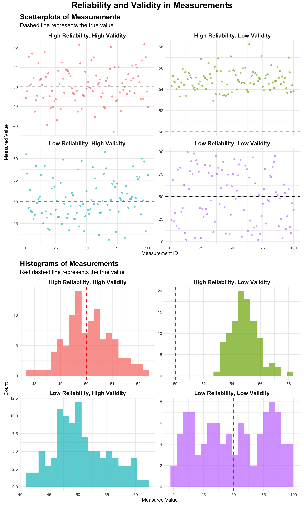
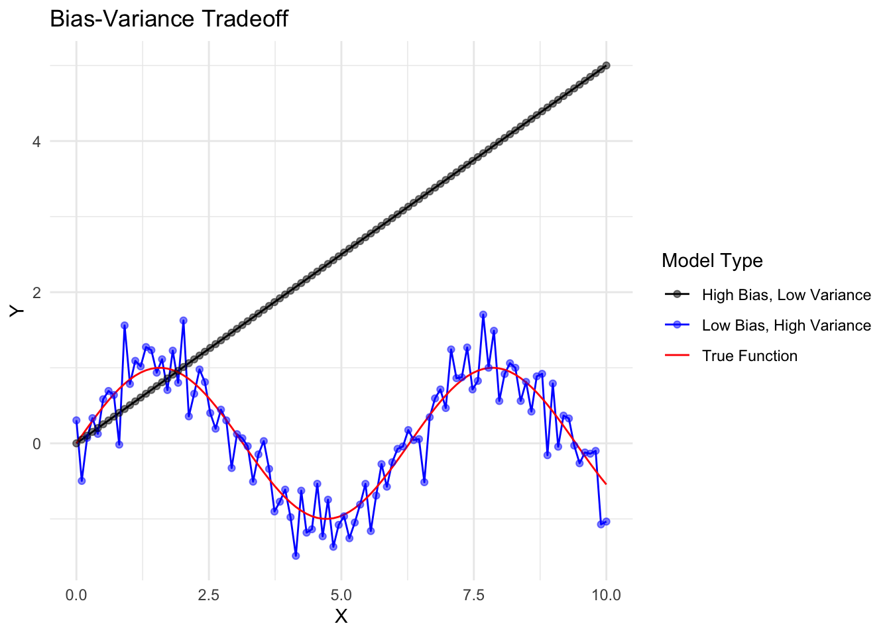
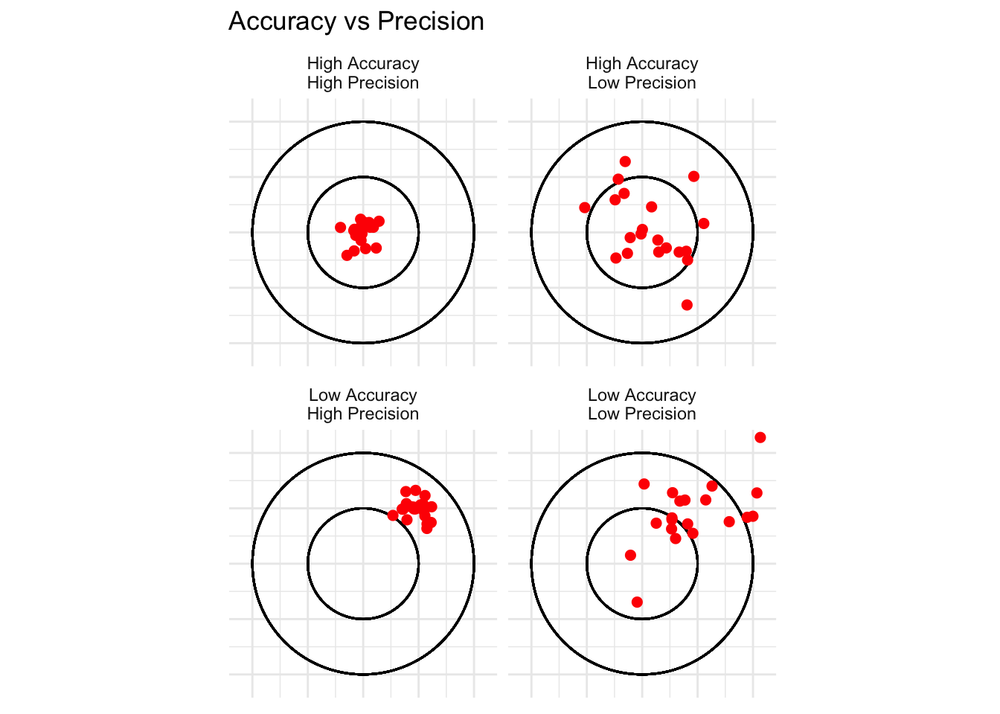

7Reliability and Validity in Data Science Research
In data science and research, two crucial concepts that determine the quality of measurements and studies are reliability and validity. Understanding these concepts is essential for conducting robust research and drawing meaningful conclusions from data.
7.1 Defining Reliability and Validity
Reliability refers to the consistency of a measure. A reliable measurement or study produces similar results under consistent conditions.
Validity refers to the accuracy of a measure. A valid measurement or study accurately represents what it claims to measure.
7.2 The Four Combinations of Reliability and Validity
There are four possible combinations of reliability and validity:
High Reliability, High Validity
High Reliability, Low Validity
Low Reliability, High Validity
Low Reliability, Low Validity
Let’s explore each of these combinations with examples and visualizations.
7.2.1 1. High Reliability, High Validity
This is the ideal scenario in research. Measurements are both consistent and accurate.
Example: A well-calibrated digital scale used to measure weight. It consistently gives the same reading for the same object and accurately represents the true weight.
7.2.2 2. High Reliability, Low Validity
In this case, measurements are consistent but not accurate.
Example: A miscalibrated scale that always measures 5 kg too heavy. It gives consistent results (high reliability) but doesn’t represent the true weight (low validity).
7.2.3 3. Low Reliability, High Validity
Here, measurements are accurate on average but inconsistent.
Example: A scale that fluctuates around the true weight. Sometimes it’s a bit over, sometimes a bit under, but on average, it’s correct.
7.2.4 4. Low Reliability, Low Validity
This is the worst-case scenario, where measurements are neither consistent nor accurate.
Example: A broken scale that gives random readings unrelated to the true weight.
7.3 Visualizing Reliability and Validity
To better understand these concepts, let’s create visualizations using ggplot2 in R. We’ll simulate measurement data for each scenario and plot them.
library(ggplot2)library(dplyr)library(tidyr)library(patchwork)set.seed(123)# Generate data for each scenarion <-100true_value <-50data <-tibble(high_rel_high_val =rnorm(n, mean = true_value, sd =1),high_rel_low_val =rnorm(n, mean = true_value +5, sd =1),low_rel_high_val =rnorm(n, mean = true_value, sd =5),low_rel_low_val =runif(n, min =0, max =100)) %>%mutate(id =row_number()) %>%pivot_longer(cols =-id, names_to ="scenario", values_to ="measurement")# Create the scatterplotscatter_plot <-ggplot(data, aes(x = id, y = measurement, color = scenario)) +geom_point(alpha =0.6, size =2) +geom_hline(yintercept = true_value, linetype ="dashed", color ="black", size =1) +facet_wrap(~ scenario, ncol =2, scales ="free_y",labeller =labeller(scenario =c("high_rel_high_val"="High Reliability, High Validity","high_rel_low_val"="High Reliability, Low Validity","low_rel_high_val"="Low Reliability, High Validity","low_rel_low_val"="Low Reliability, Low Validity" ))) +labs(title ="Scatterplots of Measurements",subtitle ="Dashed line represents the true value",x ="Measurement ID",y ="Measured Value") +theme_minimal(base_size =14) +theme(legend.position ="none",strip.text =element_text(size =16, face ="bold"),plot.title =element_text(size =20, face ="bold"),plot.subtitle =element_text(size =16))# Create the histogramhist_plot <-ggplot(data, aes(x = measurement, fill = scenario)) +geom_histogram(bins =20, alpha =0.7) +geom_vline(xintercept = true_value, color ="red", linetype ="dashed", size =1) +facet_wrap(~ scenario, ncol =2, scales ="free",labeller =labeller(scenario =c("high_rel_high_val"="High Reliability, High Validity","high_rel_low_val"="High Reliability, Low Validity","low_rel_high_val"="Low Reliability, High Validity","low_rel_low_val"="Low Reliability, Low Validity" ))) +labs(title ="Histograms of Measurements",subtitle ="Red dashed line represents the true value",x ="Measured Value",y ="Count") +theme_minimal(base_size =14) +theme(legend.position ="none",strip.text =element_text(size =16, face ="bold"),plot.title =element_text(size =20, face ="bold"),plot.subtitle =element_text(size =16))# Combine the plotscombined_plot <- scatter_plot / hist_plot +plot_layout(heights =c(1, 1)) +plot_annotation(title ="Reliability and Validity in Measurements",theme =theme(plot.title =element_text(hjust =0.5, size =24, face ="bold")) )# Display the combined plotcombined_plot

7.3.1 Interpreting the Visualizations
High Reliability, High Validity: Points cluster tightly around the true value (dashed line).
High Reliability, Low Validity: Points cluster tightly, but consistently above the true value.
Low Reliability, High Validity: Points scatter widely but center around the true value.
Low Reliability, Low Validity: Points scatter randomly with no clear pattern or relation to the true value.
Understanding reliability and validity is crucial in data science and research. High reliability ensures consistent measurements, while high validity ensures accurate representations of what we intend to measure. By considering both aspects, researchers can design more robust studies and draw more meaningful conclusions from their data.
When conducting your own research or analyzing others’ work, always consider: - How reliable are the measurements? - How valid is the approach for measuring the intended concept? - Do the methods used support both reliability and validity?
By keeping these questions in mind, you’ll be better equipped to produce and interpret high-quality research in data science.
7.4 Types of Reliability
Reliability can be assessed in several ways, each focusing on a different aspect of consistency:
Test-Retest Reliability: This measures the consistency of a test over time. It involves administering the same test to the same group of participants at different times and comparing the results.
Inter-Rater Reliability: This assesses the degree of agreement among different raters or observers. It’s crucial when subjective judgments are involved in data collection.
Internal Consistency: This evaluates how well different items on a test or scale measure the same construct. Cronbach’s alpha is a common measure of internal consistency.
Parallel Forms Reliability: This involves creating two equivalent forms of a test and administering them to the same group. The correlation between the two sets of scores indicates reliability.
7.5 Types of Validity
Validity is a multifaceted concept, with several types that researchers need to consider:
Content Validity: This ensures that a measure covers all aspects of the construct it aims to measure. It’s often assessed by expert judgment.
Construct Validity: This evaluates whether a test measures the intended theoretical construct. It includes:
Convergent Validity: The degree to which the measure correlates with other measures of the same construct.
Discriminant Validity: The extent to which the measure does not correlate with measures of different constructs.
Criterion Validity: This assesses how well a measure predicts an outcome. It includes:
Concurrent Validity: How well the measure correlates with other measures of the same construct at the same time.
Predictive Validity: How well the measure predicts future outcomes.
Face Validity: Face validity describes how test subjects perceive the test and whether - from their point of view - it is adequate for the purpose it is supposed to serve. A lack of face validity, even though the test may be valid from the perspective of a specific purpose, can contribute to a decrease in motivation among test subjects, which directly affects the results achieved or may lead to rejection of the test. While not a scientific measure, it can be important for participant buy-in.
7.6 Internal vs. External Validity
These concepts are crucial in experimental design and the generalizability of research findings:
7.6.1 Internal Validity
Internal validity refers to the extent to which a study establishes a causal relationship between the independent and dependent variables. It answers the question: “Did the experimental treatment actually cause the observed effects?”
Factors that can threaten internal validity include: - History: External events occurring between pre-test and post-test - Maturation: Natural changes in participants over time - Testing effects: Changes due to taking a pre-test - Instrumentation: Changes in the measurement tool or observers - Selection bias: Non-random assignment to groups - Attrition: Loss of participants during the study
7.6.2 External Validity
External validity refers to the extent to which the results of a study can be generalized to other situations, populations, or settings. It addresses the question: “To what extent can the findings be applied beyond the specific context of the study?”
Factors that can affect external validity include: - Population validity: How well the sample represents the larger population - Ecological validity: How well the study setting represents real-world conditions - Temporal validity: Whether the results hold true across time
7.7 Consistency in Research
Consistency is closely related to reliability but extends beyond just measurement. In research, consistency refers to the overall coherence and stability of results across different contexts, methods, or studies.
Key aspects of consistency in research include:
Replicability: The ability to reproduce study results using the same methods and data.
Robustness: The stability of findings across different analytical approaches or slight variations in methodology.
Convergence: The alignment of results from different studies or methods investigating the same phenomenon.
Longitudinal Consistency: The stability of findings over time, especially important in longitudinal studies.
Ensuring consistency in research involves: - Using standardized procedures and measures - Thoroughly documenting methods and analytical decisions - Conducting replication studies - Meta-analyses to synthesize findings across multiple studies
7.8 Balancing Reliability, Validity, and Consistency
While reliability, validity, and consistency are all crucial for high-quality research, they sometimes involve trade-offs:
A highly reliable measure might lack validity if it consistently measures the wrong thing.
Striving for perfect internal validity (e.g., in tightly controlled lab experiments) might reduce external validity.
Ensuring high consistency across diverse contexts might require sacrificing some degree of precision or depth in specific situations.
Researchers must carefully balance these aspects based on their research questions and the nature of their study. A comprehensive understanding of reliability, validity, and consistency helps in designing robust studies, interpreting results accurately, and contributing meaningfully to the body of scientific knowledge.
7.9 Bias-Variance Tradeoff
The concepts of reliability and validity are closely related to the statistical notion of the bias-variance tradeoff. This tradeoff is fundamental in machine learning and statistical modeling.
Bias refers to the error introduced by approximating a real-world problem with a simplified model. High bias can lead to underfitting.
Variance refers to the error introduced by the model’s sensitivity to small fluctuations in the training set. High variance can lead to overfitting.
Let’s visualize this concept with a simplified plot:
x <-seq(0, 10, length.out =100)y_true <-sin(x)y_low_bias_high_var <- y_true +rnorm(100, 0, 0.3)y_high_bias_low_var <-0.5* xdf <-data.frame(x =rep(x, 3),y =c(y_true, y_low_bias_high_var, y_high_bias_low_var),type =rep(c("True Function", "Low Bias, High Variance", "High Bias, Low Variance"), each =100))ggplot(df, aes(x = x, y = y, color = type)) +geom_line() +geom_point(data =subset(df, type !="True Function"), alpha =0.5) +scale_color_manual(values =c("black", "blue", "red")) +labs(title ="Bias-Variance Tradeoff",x ="X",y ="Y",color ="Model Type") +theme_minimal()

Visualization of Bias-Variance Tradeoff
In this plot: - The black line represents the true underlying function. - The blue points represent a model with low bias but high variance. It follows the true function closely on average but has a lot of noise. - The red line represents a model with high bias but low variance. It consistently underestimates the true function but has less noise.
7.10 Accuracy and Precision
The concepts of accuracy and precision are closely related to validity and reliability:
Accuracy refers to how close a measurement is to the true value (similar to validity).
Precision refers to how consistent or reproducible the measurements are (similar to reliability).
We can visualize these concepts using a simplified target analogy:
library(ggplot2)library(ggforce)create_points <-function(n, x_center, y_center, spread) {data.frame(x =rnorm(n, x_center, spread),y =rnorm(n, y_center, spread) )}set.seed(101)points <-rbind(cbind(create_points(20, 0, 0, 0.1), type ="High Accuracy\nHigh Precision"),cbind(create_points(20, 0.5, 0.5, 0.1), type ="Low Accuracy\nHigh Precision"),cbind(create_points(20, 0, 0, 0.3), type ="High Accuracy\nLow Precision"),cbind(create_points(20, 0.5, 0.5, 0.3), type ="Low Accuracy\nLow Precision"))ggplot(points, aes(x, y)) +geom_circle(aes(x0 =0, y0 =0, r =1), color ="black", fill =NA) +geom_circle(aes(x0 =0, y0 =0, r =0.5), color ="black", fill =NA) +geom_point(color ="red", size =2) +facet_wrap(~type) +coord_fixed(xlim =c(-1.1, 1.1), ylim =c(-1.1, 1.1)) +theme_minimal() +theme(axis.text =element_blank(), axis.title =element_blank()) +labs(title ="Accuracy vs Precision")

Visualization of Accuracy vs Precision
In this visualization: - High accuracy means the points are close to the center (bullseye). - High precision means the points are tightly clustered. - Each panel represents a different combination of accuracy and precision.
7.11 Conclusion
Understanding reliability and validity is crucial for conducting robust research. These concepts help us ensure that our measurements are both consistent and accurate. By relating them to ideas like the bias-variance tradeoff and accuracy-precision, we gain a deeper appreciation of the challenges involved in measurement and modeling in scientific research. As researchers, we must strive to develop measures and models that are both reliable and valid, balancing the tradeoffs between bias and variance, and between accuracy and precision. This requires careful design of research methodologies, rigorous testing of our measurement instruments, and thoughtful interpretation of our results.
7.12 Understanding Bias vs. Variance in Statistical Measurement
7.12.1 Introduction
In statistics and machine learning, two important concepts that affect the performance of our models are bias and variance. Understanding these concepts is crucial for building effective predictive models and avoiding common pitfalls like overfitting and underfitting.
Bias refers to the error introduced by approximating a real-world problem, which may be complex, by a simplified model. High bias can lead to underfitting.
Think of bias as how far off our predictions are from the true values on average.
In terms of validity, high bias means our model isn’t capturing the true relationship in the data.
Variance refers to the amount by which our model would change if we estimated it using a different training dataset. High variance can lead to overfitting.
Think of variance as how much our predictions would fluctuate if we used different datasets.
In terms of reliability, high variance means our model is too sensitive to the specific data it was trained on.
We’ll explore four scenarios to illustrate different combinations of bias and variance using synthetic data and regression models.
7.13 Data Generation and Model Fitting Function
First, let’s create a function that will help us generate data and fit models for each scenario:
generate_and_fit <-function(n, intercept, slope, noise_sd, model_degree) {# Generate synthetic data x <-runif(n, 0, 10) y <- intercept + slope * x +rnorm(n, 0, noise_sd)# Fit model formula <-as.formula(paste("y ~", paste0("poly(x, ", model_degree, ", raw = TRUE)"))) model <-lm(formula, data =data.frame(x, y))# Generate predictions x_pred <-seq(0, 10, length.out =100) y_pred <-predict(model, newdata =data.frame(x = x_pred))# Plotggplot(data.frame(x, y), aes(x, y)) +geom_point(alpha =0.5) +geom_line(data =data.frame(x = x_pred, y = y_pred), color ="red", size =1) +geom_abline(intercept = intercept, slope = slope, color ="blue", linetype ="dashed") +labs(title =paste("Model Degree:", model_degree),subtitle =paste("Noise SD:", noise_sd),x ="X (Input Variable)",y ="Y (Target Variable)") +theme_minimal() +theme(plot.title =element_text(hjust =0.5),plot.subtitle =element_text(hjust =0.5))}
This function does the following: 1. Generates synthetic data based on our parameters 2. Fits a polynomial regression model 3. Creates a plot showing the true relationship (blue dashed line), our model’s predictions (red solid line), and the data points
Now, let’s explore our four scenarios!
7.13.1 Scenario 1: Low Bias, Low Variance
In this ideal scenario, we use a linear model to fit linear data with low noise.
Explanation: - The model (red line) closely follows the true relationship (blue dashed line). - Data points are clustered tightly around the line, indicating low noise. - This scenario represents a good fit: the model captures the underlying trend without being overly complex.
7.13.2 Scenario 2: Low Bias, High Variance
Here, we use a linear model to fit linear data, but with high noise.
Explanation: - The model still captures the general trend, but data points are more scattered. - This high variance means our model’s predictions would be less reliable. - In real-world terms, this might represent a situation where our measurements are correct on average but have a lot of random error.
7.13.3 Scenario 3: High Bias, Low Variance
In this case, we use a linear model to fit quadratic (curved) data with low noise.
Explanation: - The linear model (red line) fails to capture the curvature of the true relationship (blue dashed line). - This high bias means our model is consistently off in its predictions. - In real-world terms, this might represent using an overly simplistic model for a complex phenomenon.
7.13.4 Scenario 4: High Bias, High Variance
Finally, we use a high-degree polynomial to fit linear data with high noise.
Explanation: - The model (red line) is overly complex, trying to fit the noise rather than the underlying trend. - This combination of high bias and high variance leads to poor generalization. - In real-world terms, this might represent overcomplicating our analysis and drawing false conclusions from random fluctuations in our data.
7.13.5 Conclusion
Understanding the bias-variance trade-off is crucial in statistical modeling:
Low Bias, Low Variance: The ideal scenario, where our model accurately captures the underlying relationship without being overly sensitive to noise.
Low Bias, High Variance: Our model is correct on average but unreliable due to high sensitivity to individual data points.
High Bias, Low Variance: Our model is consistently wrong due to oversimplification but gives stable predictions.
High Bias, High Variance: The worst-case scenario, where our model is both inaccurate and unreliable.
In practice, we often need to balance bias and variance. Techniques like cross-validation, regularization, and ensemble methods can help find this balance.
Remember: - A model with high bias is too simple and misses important patterns in the data. - A model with high variance is too complex and fits noise in the training data. - The goal is to find a sweet spot that captures true patterns without overfitting to noise.
By understanding these concepts, you’ll be better equipped to choose appropriate models, avoid overfitting and underfitting, and build more effective predictive models in your future statistical analyses!